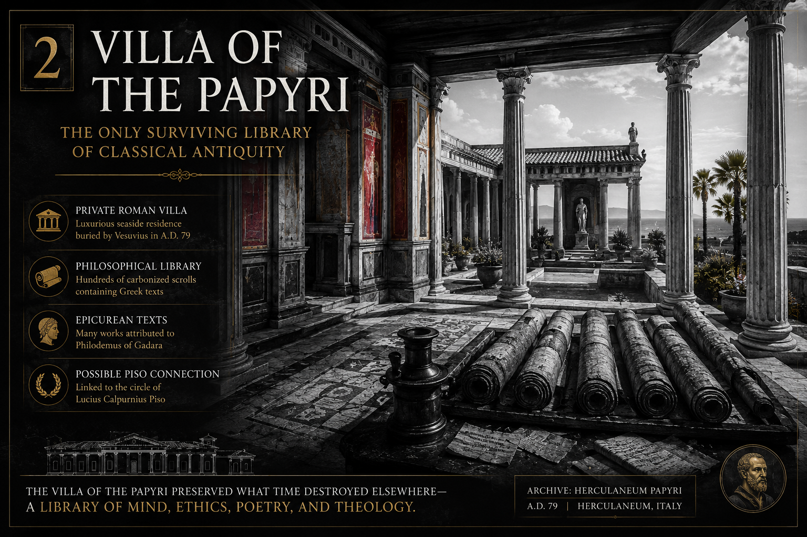

Follow the currents between ideas
The Living Archive
Fourteen field notes · Eight connected traditions · One unfolding inquiry

Western Esoteric Tradition
Western Esoteric
Alchemy, Hermetic philosophy, ceremonial practice, and the symbolic arts gathered as a many-branched current of transformation.
- Articles
- 07
- Primary texts
- 24
- People
- 18
- Related topics
- 08
Hover or focus a tradition or discipline to preview it. Click to filter the archive.
Entries
All traditions and disciplines

The Black Mirror of Fire
Obsidian as vision, shadow, blade, and volcanic memory.

The Bronze Oracle of Pergamon
An ancient machine of hidden signs and ritual intelligence.

The Painted Gate of Life
The Tabula Cebetis and the secret map of the soul.

The Hidden Waters
Alkaline aquifers and the wellsprings of the mind.

Herculaneum
The buried library beneath Vesuvius awakens again.

The Eternal Priest-King
The hidden order beyond temple, tribe, and time.

The Three Lamps of Abraham
Christianity, Islam, and Judaism beneath doctrine and law.
The Red Seven and the Lost Nation
Circle 7, Noble Drew Ali, and Moorish Science.

The Aetheric Foam
Ether, quintessence, and the hidden middle between mind and matter.

The Cipher and the Veil
From ancient secret writing to quantum-age cryptography.
The Lodge and the Totem
Freemasonry, symbolic brotherhood, and the sacred emblem.

The Underground Lightning
Vril, vital magnetism, and the dangerous dream of hidden power.

The Moon's Secret Alphabet
Nakshatras and the 27 star gates of Vedic time.

The Gate in the Ordinary
Mircea Eliade and the mystery of the sacred and the profane.